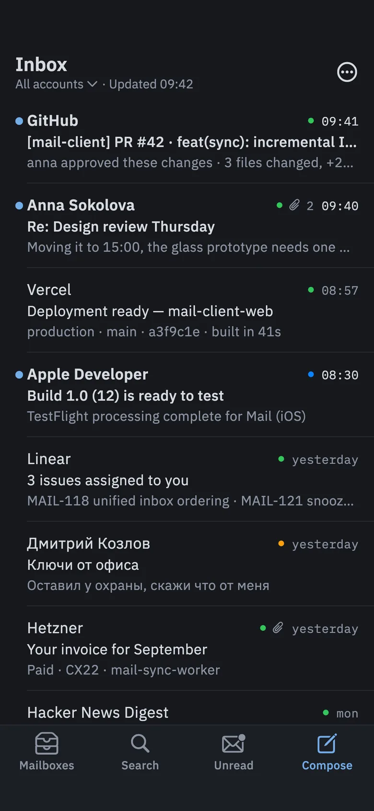
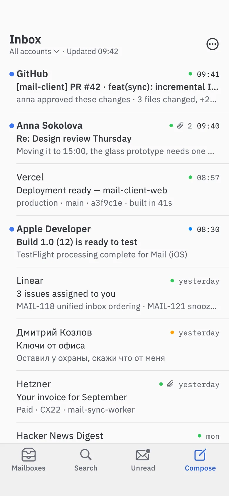
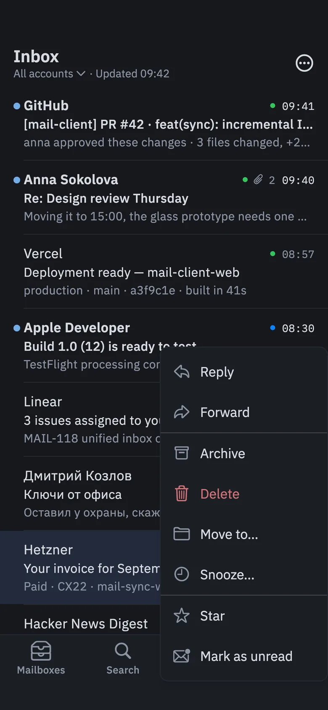
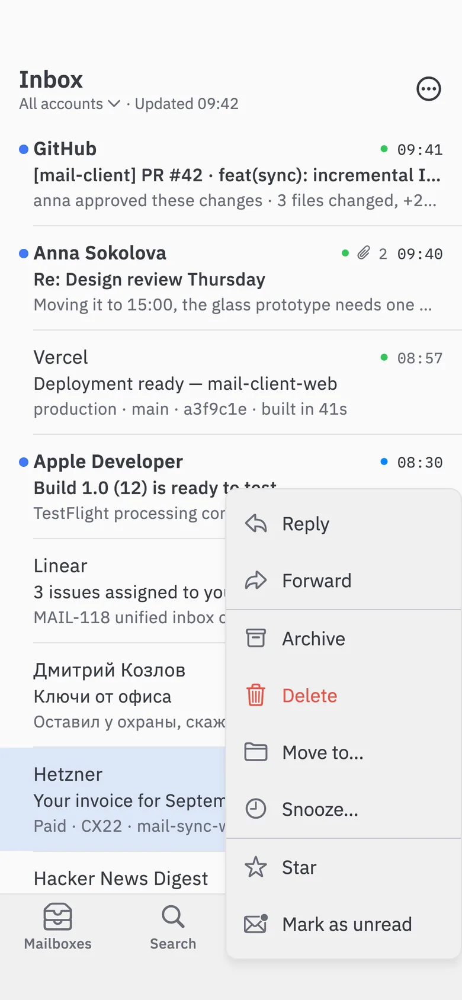
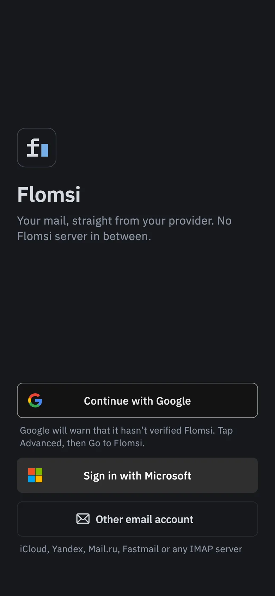
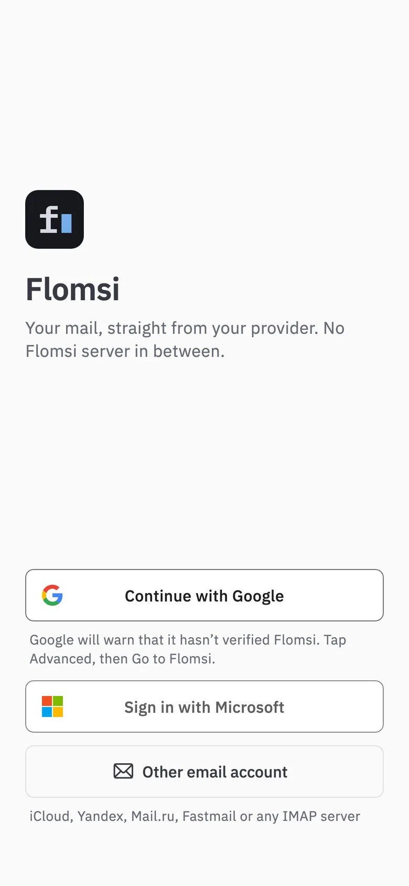

Open-source mail for macOS, Windows, iOS and Android
Mail,keyboard first
j and k move through threads, e archives, ⌘K opens the command list. A Rust core keeps your recent mail on the device, so search, archive, star and move answer at once, even offline.
The common actions have keys, and the keys are on screen.
Flomsi prints the shortcut next to the action: in the toolbar, in the command palette, in the status line at the bottom. You pick the keys up by using the app, not by studying a cheat sheet.
sta
Message
Star / Unstar*
Go
Go to Starredg s
↑↓ navigate ↵ run esc close2 results
Command palette ⌘K
Commands in one searchable list, each with its key beside it.
Snooze until…
Snooze
Later todaytoday 18:00
Tomorrowtomorrow 08:00
This weekendSat 26 Sep 09:00
Next weekMon 28 Sep 08:00
Snooze h
Hide a thread until later. When the time comes it returns to the top of the inbox, unread.
from:anna has:attachment after:2026-09
Anna Sokolova209:40
Re: Design review Thursday — Moving it to 15:00…
Search /
from:, to:, subject:, has:attachment, is:unread, is:starred, before:, after:, in:, account:. Full text over the mail on the device, and Search on the server for the rest.
Drag files onto the composer, open or save with one click, forward with the originals. Files that can run code are not opened from the mail.
1 image blockedLoad images
Hi, your invoice for September is paid. Thank you.
Remote images off by default
Mail HTML is cleaned in the Rust core and drawn without a WebView or JavaScript. Trackers stay out until you click.
Accounts
dev@gmail.com2
me@icloud.com1
work@yandex.ru
Mailboxes
Inbox3
Starred1
Archive
Accounts IMAP · SMTP
Gmail, iCloud, Yandex, Mail.ru, Fastmail or any IMAP server, with an app password. One inbox for all of them, or one account at a time.
The same inbox on your phone.
On a phone the panes and the keys give way to a bar of buttons, swipes, and screens of their own for a conversation, a new message and settings. Touch targets are 48 points, and the theme follows the system.


A bar at the bottom
Mailboxes, Search, Unread and Compose sit under your thumb. Tap the account line under the title to switch accounts or see them all.


Long press and swipe
Hold a message for its menu. Swipe right to archive, left to delete. Archive, delete and move wait five seconds with Undo before they reach the server.


Sign in
Continue with Google or Microsoft on the provider's own page, or add any IMAP account with step-by-step app-password instructions. Microsoft sign-in comes later.
Vim or Gmail. Keep the keys your hands already know.
Two presets ship with the app. Each is a small JSON file in app/assets/keymaps, so changing a key is a one-line edit and a rebuild. The demo at the top follows the preset you pick here.
Move
Next threadj
Previous threadk
Open↵oro
Backescoru
Act
Archivee
Delete#
Snoozeh
Star*
Move to folderl
Write
New messagec
Replyr
Reply alla
Forwardf
Send⌘↵
Go
Inboxgi
Starredgs
Archivega
Search/
Commands⌘Kor?
Settings⌘,
Reply, reply all and forward work in an open conversation: ↵ or o opens it. Single-key shortcuts only fire outside text fields, so typing an e in search types an e; it never archives the thread you were reading.
A Rust core that answers before the server does.
Archive, delete, star and move land in a local SQLite database first. An outbox replays them to the server two seconds later and survives a lost connection, so the list never waits on the network.
IMAP IDLE on each account's inbox and a full sync every 10 minutes while Flomsi runs. Local changes reach the server within seconds. Phones check when the app is opened.
cache
The newest 200 messages of Inbox, Sent and Archive (All Mail on Gmail) to start, 50 of Junk and Trash. Load older mail brings 200 more at a time.
search
SQLite FTS5 over the mail on the device, with one query language in the app and in the CLI. Search on the server looks past the cache.
html mail
Cleaned in the core and drawn without a WebView or JavaScript. Remote images wait for your click.
secrets
Passwords and tokens live in Keychain, in Windows Credential Manager, or on Android under a key held in the Android Keystore; never in the database.
sending
SMTP over TLS on 465 or STARTTLS on 587, straight to the server, so it needs a connection. Bcc stays in the envelope.
tested
IMAP and SMTP run end to end in CI on every push to main and every pull request: against scripted TLS servers and against real Dovecot and mailpit. The same run builds all four apps.
platforms
One Rust core under a Flutter interface on macOS, Windows, iOS and Android.
Continue with Google works in every download; 0.2.2 fixes Android closing as the Google page returned. A new mark, an fl ligature whose l is the text cursor, on all four platforms and on this site. Android builds now use one permanent key.
Undo on phones
Archive, delete and move wait five seconds with Undo before they reach the server. A conversation, a new message and settings each get a screen of their own.
A phone layout
A bottom bar with Mailboxes, Search, Unread and Compose, and dropdown menus for accounts and the rest. Swipe right to archive, left to delete, long press for everything else.
Sign in with Google and Microsoft
A start screen with Continue with Google, Sign in with Microsoft and Other email account. Sign-in happens on the provider's page and tokens refresh by themselves. Google sign-in is in the downloads from 0.2.1; Microsoft follows later.
New-mail notifications
On macOS, Windows and Android while Flomsi runs, one per conversation. On macOS, closing the window keeps mail coming in.
Older mail and server search
Load older mail at the end of the list brings 200 more messages. Search on the server looks past what is on the device.
Where Flomsi stands
Version 0.2.2, an early build. Here is what works and what comes next.
Works today
App passwords for Gmail, iCloud, Yandex, Mail.ru, Fastmail and any IMAP server, with step-by-step guides
Several accounts in one inbox, or one at a time
Search, stars, snooze, and move to any folder
Attachments, and drafts saved on the device
New-mail notifications on macOS, Windows and Android while Flomsi runs
A phone layout with swipes and Undo
Vim and Gmail key presets, dark and light themes
Coming next
Microsoft sign-in, which Outlook, Hotmail and Microsoft 365 need.
Drafts synced with the server's Drafts folder
Gmail labels and your own folders in the sidebar
Gmail API, JMAP and Microsoft Graph
New mail on phones while the app is closed
Signed builds, and a macOS build for Intel Macs
Version 0.2.2 · 24 Sep 2026
Get Flomsi
Builds for macOS, Windows, Android and iOS. They are not signed by Apple, Microsoft or Google yet: macOS, Windows and Android ask once before they open them, and on iOS you sign the app yourself with AltStore or Sideloadly.
macOS 12 or later on Apple silicon. Intel Macs: build from source for now.
Unzip the file and move Flomsi.app to Applications.
The app is not notarised, so the first launch is blocked. On macOS 15 and later, try to open it once, then click Open Anyway in System Settings → Privacy & Security. On macOS 14 and earlier, Control-click the app, choose Open, then Open again.
Or in Terminal: xattr -dr com.apple.quarantine /Applications/Flomsi.app
Open the APK on the phone and allow installs from that source when Android asks.
Allow notifications to get new-mail alerts.
From 0.2.1 every release is signed with one permanent key, so updates install over the last version. 0.2.0 used a one-off key: uninstall it before installing 0.2.1, then add your accounts again.
The IPA is unsigned. Install it with AltStore or Sideloadly, which sign it with your Apple ID on the way in.
On iOS 16 and later, turn on Developer Mode in Settings → Privacy & Security before the first launch.
With a free Apple ID the signature lasts 7 days. AltStore renews it while AltServer is reachable; with Sideloadly, install again.
Mail is checked when you open the app; there are no alerts while it is closed.
Sign-in
Continue with Google works from 0.2.2 (on Android, 0.2.1 closed as the Google page returned). Outlook, Hotmail and Microsoft 365 need Microsoft sign-in, which comes later; other providers use an app password.
Until Google has verified Flomsi, Google's page warns that the app is unverified: choose Advanced, then Go to Flomsi.
Checksums
SHA256SUMS.txt covers every file. On Linux, sha256sum -c --ignore-missing SHA256SUMS.txt. On macOS, shasum -a 256 Flomsi-macOS.zip and compare with its line. On Windows, Get-FileHash Flomsi-windows.zip.
mailctl
The terminal tool on the same core ships for Linux x86_64: mailctl-linux-x86_64, 10 MB. Run chmod +x on it first. It reads the password from $MAIL_PASSWORD or asks, and keeps it in a Secret Service keyring such as GNOME Keyring or KWallet, which a bare server may not run. It is built on Ubuntu 24.04 and needs a glibc at least that new.
On macOS, build it with make cli. On Windows, run cargo build --release -p mailctl in core/, and pass --data-dir %USERPROFILE%\.mail_ to open the app's mailbox. docs/SMOKE.md (in Russian) has a first check.
Build from source
You need Rust (stable, through rustup) and Flutter, plus Xcode for macOS and iOS, or Visual Studio with the Desktop development with C++ workload for Windows. A build on your own Mac runs on Intel too: flutter build macos --release in app/ makes Flomsi.app. On Windows, run flutter build windows --release there.
Google and Microsoft sign-in appear only in builds given the app's client IDs, such as FLOMSI_GOOGLE_CLIENT_ID; docs/SETUP.md (in Russian) lists them. Without them, accounts use app passwords.
build from source
$ git clone https://github.com/zondaxxx/Flomsi
$ cd Flomsi
# run the macOS app from source$ make app-mac
# the interface alone, with sample mail$ make app-mac-mock
# mailctl, into core/target/release$ make cli